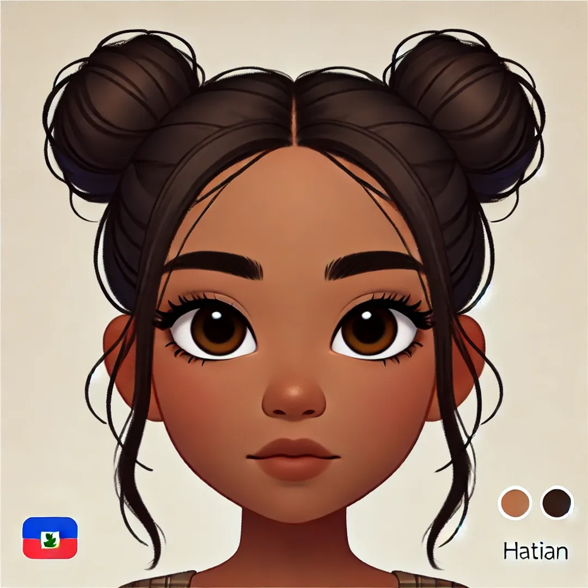

Je suis Sandra
Je suis
Bienvenue sur mon portfolio

Bienvenue sur mon portfolio
Le BTS SIO (Services Informatiques aux Organisations) est un diplôme de niveau Bac+2 qui forme des techniciens en informatique. Il propose deux spécialités :
- SLAM (Solutions Logicielles et Applications Métiers) : développement d’applications, gestion de bases de données, programmation.
- SISR (Solutions d’Infrastructure, Systèmes et Réseaux) : administration de réseaux, sécurité informatique, maintenance des systèmes.
Ce BTS prépare aux métiers du développement, de la gestion des systèmes informatiques et de la cybersécurité, avec des débouchés en entreprise ou en poursuite d’études.
Ce projet a été réalisé avec Typescript, HTML et CSS. Ceci est un calculateur de savon afin de pouvoir effectuer differant dosage.
Quelles sont les 4 grandes technologies ?
Big data, connectivité, intelligence artificielle et cybersécurité sont les grandes technologies de l'ère numérique.
Champs de bataille en 2040
Le Commandement du combat futur de l'armée de Terre est chargé de préparer ce que pourraient être les guerres de demain, en anticipant notamment les évolutions technologiques… Attention, ceci n’est pas de la science-fiction
Contactez-moi :